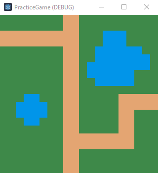
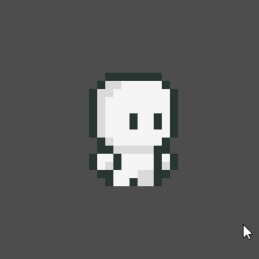
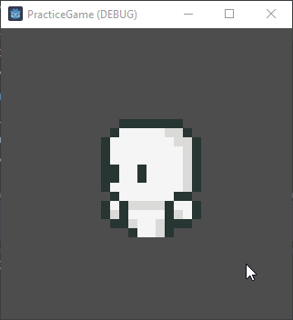

13 Aug 2024
Long time no post!
It’s been a minute since my last post. Things have been pretty hectic with the start of my Master’s program which is winding down here in a couple of weeks. I’ve been on the grind to really make the most of being back in school and I’ve been trying to secure an internship as soon as possible. Things have been a struggle to be honest but I think I’m in an okay place now. I decided to start one of my projects as both a way for me to develop my skills and keep my head outta negative spaces. This will also be the first time I am attempting to attach a bunch of assets in with markdown so bear with me if there are any mistakes haha. Anyways, as promised here’s my first technical post!
This is the start of my TRPG game. This first project I’m doing is mostly a practice
project just to familiarize myself with the environment and scripting language
because I decided to work on Godot, which is entirely new to me. I didn’t think too
much about which engine to use other than the fact that Godot script is very similar
to python so I figured it would be relatively quick to pick up. I also plan on
making a 2D game and Godot has a dedicated 2D engine and its workflow is pretty
smooth based on what I’ve researched.
My first goal was to aquire some sample free assets:
| Grass | Path | Water |
|---|---|---|
I just used the simple tiles above in a tilemap node to create a pre-set map for the player:
Then I loaded in the player character:

Which I thought was super cute. From the player character, I only used the running and idle
animations since that’s all I really needed. Oh before I continue, for the map assets I need
to give credit to Kenmi and for the character, credits to
Bagong Games. Okay! So now that that’s outta the way, the first
step for me was figuring out how to select a tile similar to your classic TRPGs such as Final
Fantasy or Fire Emblem. In Godot, the standard script loads the ready and process functions. So what
exactly do those do? The ready function is called when the node enters the scene tree for the first time
in our case, that will be automatically when the game is launched. The process function is called every
frame so it is constantly running. Since my map is prebuilt, it already exists before the scene is launched
so for the functionality of selecting a tile, I need to create the selector based on what tile my
mouse is currently hovering over. This selector must also move with my mouse and be deleted from past
tiles. For that, I actively detected the ‘active’ tile a user hovers over by utilizing two built in functions:
local_to_map() to return the current map coordinates of the cell containing the current local position which is
a parameter for this function and get_global_mouse_position() which gets the coordinates of the mouse relative
to the map. With this, we have the tile the user is hovering, now to “select” the tile we load the
selector image asset over the current tile. This is done with set_cell() with parameters which allow me
to select the layer to alter the cell on, the coordinates which we found above, the source id, and the atlas coordinates.
So I set the layer to 1 to separate my permanent assets from temporary, and the source id along with the atlast
coordinates can be found based on the tile asset you are trying to use. So this works great, but there is already
a bug, where the selector is overlayed, but isn’t cleared when the user leaves the tile.

So to fix this, I just run a nested forloop through each of the tiles in the tilemap and erase all cells on layer 1 where my temporary assets are living. Which results in the desired output.
Now, I’ve essentially set up the map and its UI properly for a 2D grid game, so onto the character. So for basic set up,
I create a CharacterBody2D node as a child of the current scene and within this node are 2 more children, an AnimatedSprite2D and CollisionShape2D. The animated sprite child is to give the player a visual and the collision shape is an invisible node which determines
where the character collides with objects. An example to make this easier to visualize is hitboxes in FPS, specifically,
that horrific incident where Blizzard made headshot boxes so large that the crosshair reticle didn’t even have to be
on a character’s head to hit a headshot on that character. It was crazy. So in game development, the trend is actually to
make the collision box slightly smaller than the actual model but not too small or else the edges of the visual representation
of the character will overlap with the edges of the collided object. So using the animated sprite node, I load in the frames
of the character. For now, the default animation is just the character idling. Godot is pretty nifty where it can take a sprite
sheet and create custom tiles from that sheet which makes it quite simple to load in separate frames for each animation. So
here’s a little demonstration of the animations I am using for each action currently in the game.


Now we just place the character where we want it to start and move onto figuring out movement. So for movement, there’s a
pretty nifty class called ‘AStarGrid2D’ which is an implementation of A*, a pathfinding algorithm, to find the shortest path
between two points on a partial 2D grid. So with this, we set up the region of the grid and set the cell_size to make
the 2D movement more smooth. Then, if you noticed above, I have set water tiles which the player should not be able to
walk through. So for this we set that tile with a custom data type string and specify the water tile to be the custom
data type string with value ‘water’. Now under the tilemap’s ready function, I scan through the entire map and for any
cell that contains a custom data value which is equal to ‘water’, I set that point to a solid. This way when the pathfinding
algorithm is searching for the shortest path, it will not go through any points that is identified as solid, avoiding the water.
The next consideration is if the player is in a valid position, so on player’s movement event, which in this case is just controlled
with a simple left-click, we need a function to check that the input is valid, which means it is in-bounds of the tilemap
and that it is not a water cell. If we pass this boolean check function, we can set the path by calling astar’s get_id_path()
function which takes two cells and computes an array of consecutive cells forming a path to the target destination from the
current location. As the player moves through each cell in the path, that front value will be dropped until the path is empty
and the character has reached its location. This looks something like this:
Now, you’ll notice that the pathfinding is working properly and when I try to attempt to click on invalid cells, there is no action.
However, the movement looks funny since my lil buddy is just running the idle animation and does not face the direction of movement.
To remedy this, I use a helper function to turn the character based on the difference of coordinates of the current position and the
next position the bud is moving to. So if he’s travelling right, the x values will have a negative difference and left it will be positive
and the same applies for y values. Then based on which way he’s travelling, we’ll run the separate directional running animations
to get more smooth movement. We also have to consider once he has reached his target destination to go back to being idle,
so in the check to see if there is a path to follow, we’ll have him return to default animation and return since all of this takes
place in the process function which is run at every frame. So the final product looks a little something like this.
Thanks for tuning in and I’ll probably come out with more of these pretty soon as I continue to learn what I need to make my first
full blown game! Bye! :)